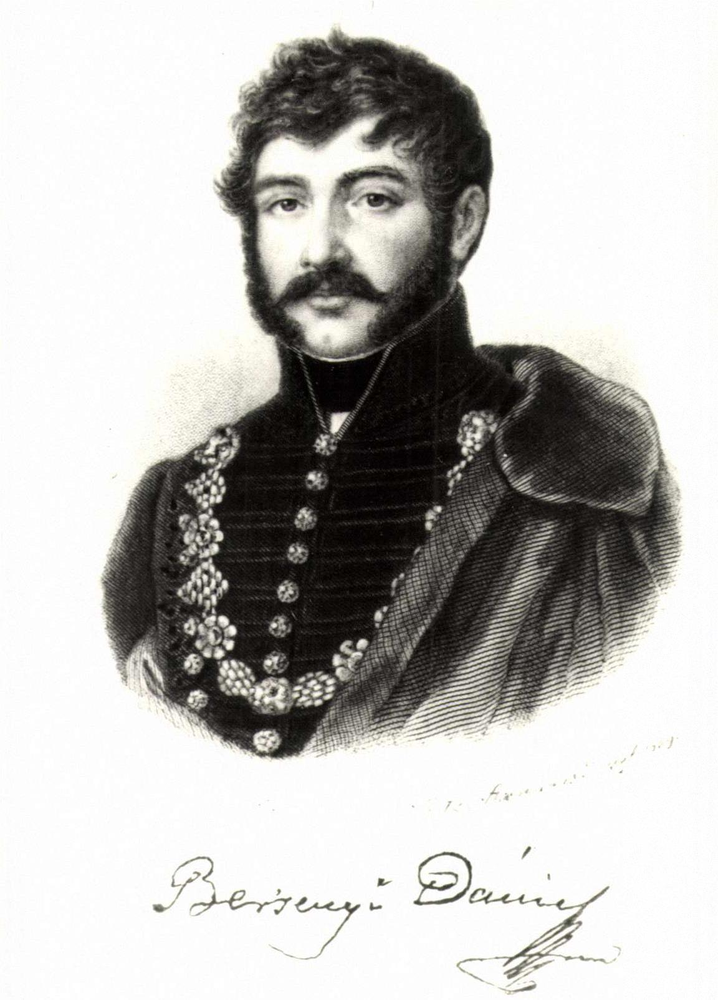

Egyházas-nagyberzsenyi Berzsenyi Dániel (Egyházashetye, 1776. május 7. – Nikla, 1836. február 24.) magyar költő.

Élete
Középbirtokos nemesi családban született. Sopronban, az evangélikus líceumban tanult, ahol inkább testi erejével tűnt ki, mint szorgalmával vagy jó magatartásával. Az apja hatalmától szabadulni akaró ifjú házasságot kötött Dukai Takách Zsuzsannával,[1] és felesége sömjéni birtokára költöztek.
Titokban írt verseit barátja, Kis János lelkész elküldte a korszak irodalmi vezéralakjának, Kazinczy Ferencnek. Berzsenyi felbuzdult a széphalmi mester dicséretén, és egy kötettel lépett a nyilvánosság elé. Ezután egyre kevesebbet verselt, Kölcsey Ferenc kritikája is kedvét szegte. Tanulmányokba kezdett, hogy költészetét a bírálattal szemben megvédhesse. Poétai harmonisztika című értekezésében fektette le a költészettel kapcsolatos nézeteit. Élete végén egyre magányosabban élt birtokán, Niklán. Berzsenyi művészetét az erőteljes kifejezések, költői képek jellemzik. Versei egyéni érzései mellett általános gondolatokat is megfogalmaznak. Hazafias műveiben hangot kap a magyarság iránti aggódás.
Gyermekei
- Lídia (Barcza Károlyné) (1800. február 19 - 1849. június 5)
- Farkas (1803. október 18 - 1880. június 3)
- Antal (1806. szeptember 9 - 1884. szeptember 28)
- László (1809. november 24 - 1884. december 15)
Költészete
Berzsenyi a legnagyobb magyar lírikusok közé tartozik, kiváló ódaköltő és a klasszikus ódának nálunk legnagyobb mestere. Költészete az ó-klasszikus irány legnemesebb eredménye, koronája, melyben a klasszikus és nemzeti elem egybeolvadva, mint saját magyar klasszicizmus jelentkezik. Horatiusnak tanítványa, de nem puszta utánzója; költészetük némely tárgyköre összevág, de a két költő egyénisége rendkívül különbözik. Berzsenyi számos képet, kifejezést, gondolatot vesz Horatiustól, de indítékai eredetiek; a hazafiság, vitézség, szerelem, megelégedés, arany középszer eszméi éppen úgy, sőt mélyebben ihletik, mint Horatiust. Erősebb az érzésben, gyöngébb a reflexióban; fölülmúlja lelkesedése hőfokával, érzelme mélységével és igazságával, nem éri el szellemességben, változatosságban és virtuozitásban. Lendületének fensége, bölcseletének némi színezete, stílje és versformája klasszikus, de a tartalomban, az érzésben nemzeti. Költészete nem nyelvművelő iskola, hanem az élet nagy eszméinek kifejezője. A magányban fejlődve, s a közélet kicsinyes napi alkalmaitól távol, gondolataival a nemzeti lét- és az emberiség legfőbb érdekein függve, megszokta a legfensőbb eszmékkel foglalkozni, s amikor mint kész költő a nyilvánosság elé lépett, a magány idealizmusát, úgyszólván naiv lelkesülését hozta magával. Költészete tele van tűzzel, extatikus robbanó erővel, fenséggel, és szokatlan melléknév-főnév "állandó" jelzőkkel, erkölcsi alapja szilárd és iránya eszményi. Prófétai haraggal hirdeti az elfajult nemzedéknek a pusztulást, és magyar büszkesége fenséges örömmel tör ki, amikor a régi vitézség jeleit látja a napóleoni háborúkban.
A hazafias ódákon kívül, melyek egy részét a közélet kiváló alakjaihoz intézte (Felsőbüki Nagy Pálhoz), írt vallási (Fohászkodás), szerelmi (Első szerelem, Búcsúzás), életbölcseleti kedélyi, erkölcsi ódákat (Káldi Pálhoz, A közelítő tél, Barátimhoz) is , melyekben az ódai tűz gyakran elégikus színezetet nyer; sokszor énekli a magányosság, megnyugvás megelégedés, mulandóság érzelmeit (Magányosság, Az én osztályrészem, jámborság és középszer, A temető).
A gondolatok merész röpte, az érzés heve és ereje megfelelő ódai nyelvben nyilatkozik, mely a trombita összeszorított hangjaként hat; tömött, fényes képekben, új fordulatokban gazdag és olykor dagályos. Az ódai fenség gyakran kellembe olvad nála, és ereje finom gyöngédséggel párosul. A kellem hangját sokkal jobban eltalálja ódáiban, amikor mintegy a fenségből hajlik alá, mint rímes dalféléiben. Költészetéből a dal könnyüsége és játékos bája hiányzik. Rímes versei közt az elegiafélék a legszebbek, így Búcsúzás Kemenesaljától, Levéltöredék barátnémhoz, Szerelem és Életfilozofia, melyekben a modernebb reflexiv költészethez hajlik, és a hangnak egyszerűbb költőiségével, az érzés közvetlenségével és természetességével hat meg; e költeményeiben magyar ritmusokat alkalmaz.
Költői levelei nem versenyeznek Kazinczyéival, szellemességre és könnyűségre nézve, de tartalmilag költőiebbek. Néhány epigrammja pedig (Napoleonhoz és Wesselényi Miklós képe) legszebb lírai epigrammjaink közé tartozik.
| Berzsenyi Dániel családfája |
|---|
| egyházas-berzsenyi Berzsenyi Dániel, (Egyházashetye, 1776. máj. 6. – Nikla, 1836. febr. 24.) költő, a Magyar Tudományos Akadémia rendes tagja |
| Apja: egyházas-berzsenyi Berzsenyi Lajos (Egyházashetye, 1744 – Egyházashetye, 1819. szept. 27.) Vas vármegyei középbirtokos, ügyvéd |
| Anyja: nemes Thulmon Rozália (Gomba, 1753. dec. 14. – Egyházashetye, 1794 szept. 9.) |